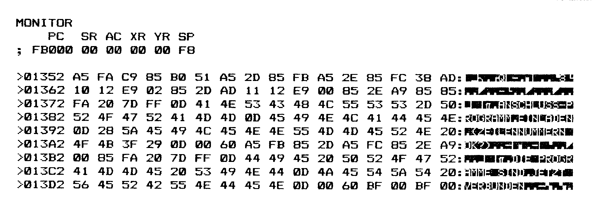

C 128-Reisebericht
Der C128 ist immer noch auf weiten Strecken »Neuland«. Dieser Reisebericht gibt nützliche Tips & Tricks zum Umgang mit dem Computer.
Wir glaubten unseren Korrespondenten, der sich seit einiger Zeit auf einer Forschungsreise durch den unbekannten Kontinent Commodore 128 befindet, bereits von Bit-Monstern zerrissen, da flatterte uns sein zweiter Zwischenbericht auf den Tisch-
Oasen für Maschinenprogramme
Zwar verfügen wir im C 128 über enorm viel Speicherplatz, und man sollte meinen, daß die Unterbringung von einigen Bytes Assemblerprogramm keine Probleme bietet. Weit gefehlt! Probleme treten in dem Moment auf, indem durch das Programm Firmware-Routinen aufzurufen sind. Befindet sich das Programm dann im RAM unter dem Firmware-ROM, wird es recht kompliziert, jedesmal Bank-Umschaltungen mit einzubauen. Erfreulicherweise existiert aber ein gewaltiger Bereich, über dem kein ROM zu finden ist, so daß man sich um den ganzen Bank-Zirkus nicht zu kümmern braucht (jedenfalls nicht im Assembler-Programm). Ohne mit einem Basic-Programmtext in Konflikt zu geraten oder mit RAM-Bereichen, die für die Grafik notwendig sind, können einige Speicherteile unterhalb von $1C00 dienlich sein.
Da bietet sich zunächst einmal der Kassettenpuffer an. Er liegt im Gebiet $0B00 bis $0BFF. Zweierlei spricht allerdings gegen das Einlagern eigener Routinen dort:
1) Es gibt mehr Datasettenbenutzer als man glaubt! Und die ärgern sich immer fürchterlich, wenn ihre Interessen übergangen werden.
2) Nach jedem Reset ist dieser Bereich gelöscht. Das ist beispielsweise für ein OLD-Programm — das ja nun gerade in Aktion treten soll — recht unangenehm.
Benutzen Sie also diesen Speicherabschnitt nur dann, wenn Sie sicher sind, daß Sie keine Datasettenoperation während der Speicherverweildauer Ihres Maschinenprogrammes brauchen und legen Sie nur solche Programme oder Daten dort ab, denen ein Reset nicht allzu weh tut.
Falls Sie am C 128 ausgiebig die RS232C-Schnittstelle benutzen, dann überlesen Sie diesen Abschnitt, denn es geht um die Bereiche $0C00 bis $0CFF (RS232C-Eingabepuffer) und $0D00 bis $0DFF (das ist der Ausgabepuffer). Soweit ich feststellen konnte, wird dieser gesamte Bereich ausschließlich durch die genannte Schnittstelle benutzt, ansonsten gibt es keinen Hinderungsgrund, hier allerlei Programme oder Daten abzulegen.
Aber es kommt noch besser: Auch größere Maschinenprogramme finden Platz zwischen $1300 und lBFF. Hier kommt ihnen nichts mehr ins Gehege. Ich empfehle Ihnen daher, das OLD-Programm aus dem ersten Teil dieser Serie (Ausgabe 2/85, Seite 43) mittels des Monitor-Kommandos T E000 E051 1300 dorthin zu verschieben. Weitere — noch vorzustellende — Nützlichkeiten sollen sich dort dann anschließen.
Noch einmal OLD
Gehen wir davon aus, daß OLD nun bei $1300 startet. Das Programm ist so gebaut, daß es auch verschobene Basic-Programme wieder restaurieren kann (falls der Zeiger $2D/2E noch stimmt). Das funktioniert auch einwandfrei, wenn man die Verschiebung durch einen Grafikbefehl bewirkt (wenn keine Grafik initialisiert wurde, startet der Basic-Text bei $lC00, sonst aber bei $4000). Allerdings ist es in diesem Fall wichtig, vor dem SYS-Aufruf noch die richtige Bank einzuschalten. Insgesamt heißt dann der OLD-Aufruf: BANK0:SYS DEC("T300")
Im Basic-Interpreter findet sich bei $4F4F der Einsprung in eine Routine, die die Zeilenlinker neu berechnet. Im C 64-Modus kann man ein OLD einfach dadurch erreichen, daß man in die beiden ersten Speicherstellen des Basic-Textes (also in den ersten Zeilenlinker) irgendwelche von Null verschiedenen Werte schreibt und dann diese Routine aufruft (sie liegt im C 64-Modus an der Adresse $A533). Danach muß der Variablenstartvektor noch mit dem richtigen Wert beschrieben werden. Ein Programm dazu finden Sie in Happy-Computer, Ausgabe 10/85, Seite 48.
Zwar kann man beim C 128 auf diese Weise mittels $4F4F ein Programm wieder LIST-fähig machen, versucht man aber, eine Zeile dazuzuschreiben, bricht das System zusammen und man hat einen Reset vollführt.
LIST im Programm-Modus
Im C 64-Modus führt ein LIST im Programmtext automatisch zum Abbruchdes Programms. Nicht so im C 128-Modus: Hier wird das Programm (oder der gewünschte Teil) brav abgebildet, und danach läuft das Programm weiter. Das ist für selbstmodifizierende Programme ein interessanter Aspekt.
Control-C
Erschrecken Sie bitte nicht, falls Sie unbeabsichtigt einmal gleichzeitig auf die Control- und die C-Taste gedrückt haben: Das gerade laufende Programm hält sofort an. Erst nach ei-. nem beliebigen weiteren Tastendruck setzt es die Arbeit fort. Wir haben also eine Pausentaste im Computer!
Zwei neue SPRDEF-Optionen
Nicht im Handbuch beschrieben sind zwei Möglichkeiten des SPRDEF-Befehls: Die Taste »C« bewirkt eine Kopierfunktion. Nach dem Drücken von »C« meldet sich der Sprite-Editor mit der Frage »COPY FROM?«. Eine nun eingegebene Sprite-Nummer führt dazu, daß das dazugehörige Spritemuster in das aktuelle Sprite geschrieben wird. Ein eventuell vorhandenes Muster wird überschrieben. Sinnvoll ist diese Option besonders beim Erstellen mehrerer ähnlicher Sprites, wie man sie beispielsweise für Trickfilme benötigt.
Ein Druck auf die F1-Taste hat übrigens dieselbe Wirkung: Gelangt man durch ein Versehen in diesen Kopiermodus, dann genügt ein RETURN, um ihn wieder zu verlassen.
Control-C erlaubt das Umschalten zwischen den verschiedenen Spritemustern. Nach dem Druck auf diese Tastenkombination verschwindet die aktuelle Spritenummer. Gibt man nun die gewünschte Nummer ein, erscheint das dazugehörige Muster zur weiteren Bearbeitung.
Zusätzliche Monitor-Kommandos
Die Symbole »$«,»+«, »&« sowie»%«können nicht nur — wie im Handbuch erwähnt — zum Definieren von Zahlen bestimmter Systeme (in der gleichen Reihenfolge: hexadezimal, dezimal, oktal sowie binär) verwendet werden, sondern auch als Kommandos. In diesem Fall bewirken sie eine Ausgabe der gewünschten Zahl in allen Zahlensystemen. Wollen Sie beispielsweise wissen, wie die Dezimalzahl 15 in anderen Systemen aussieht, dann geben Sie einfach ein:
+15
Es erscheint dann:
$0F
+ 15
&17
%1111
Etwas weniger klar in seiner Anwendung — und vielleicht deshalb auch im Handbuch nicht erwähnt — ist das Monitor-Kommando »J« (das hängt sicher mit Jump zusammen). Soweit ich bisher herausfinden konnte, hat »J« die gleiche Wirkung wie »G« (also GO). Es startet ein Maschinenprogramm an der als Argument angegebenen Adresse. Die Syntax ist ebenfalls die gleiche wie die von »G«, also startet beispielsweise »J $01300« ein in Bank0 bei Adresse $1300 liegendes Maschinenprogramm.
MERGE für den C 128
Außer dem OLD-Befehl vermißt mancher Benutzer des C 128 noch eine Möglichkeit, Basic-Programme zu verbinden, die durch einen MERGE-Befehl gegeben wird. Das Prinzip, das mit einem MERGE realisiert werden kann, unterstützt die strukturierte Programmierung. Es ist nämlich nun möglich, Programm-Module zu erstellen und zu speichern, die in sinnvoller Kombination zum Gesamtwerk verknüpft werden können.
Das hier abgedruckte Programm MERGE (Listing) können Sie wieder direkt mit dem Monitor eingeben. Es belegt den Adreßbereich von $01352 bis $013DD. Das Programm besteht aus zwei Teilen, zu denen der Inhalt der Speicherstelle $FA führt. Ist dieser Inhalt gleich Null, dann wurde MERGE zum ersten Mal aufgerufen. Der Vektor $2D/2E wird zwischengespeichert, vom Basic-Textende-Vektor $1210/1 zwei abgezogen und das Ergebnis nunmehr in den Textanfang-Vektor $2D/E eingetragen. Schließlich schreibt das Programm eine Kennzahl (hier $85) in die Flagge $FA und meldet sich mit einem Text:
»ANSCHLUSS-PROGRAMM EINLADEN (ZEILENNUMMERN OK?)«

Es besteht nun die Möglichkeit, ein weiteres Modul zu laden oder einzutippen. Außerdem können durch RENUMBER Zeilennummern hochgelegt werden, damit sie nicht in Konflikte mit dem ersten Programmteil geraten.
Ein erneuter Aufruf von MERGE verzweigt nach der Prüfung der Flagge nun in den anderen Programmteil, der lediglich den ursprünglichen Wert des Vektors $2D/E restauriert und in die Flagge wieder den Wert Null einträgt. Abschließend wird die Meldung
»DIE PROGRAMME SIND JETZT VERBUNDEN«
ausgegeben. Damit sind beide Programmteile nun zu einem kombiniert und können durch ein erneutes RENUMBER auch von den Zeilennummern her in eine ansprechende Form gebracht werden. Der Aufruf von MERGE geschieht durch BANK15:SYSDEC("1352")
MERGE kann beliebig oft angewendet werden, auch dann, wenn der Basic-Start (beispielsweise durch Einrichten eines Grafikbildschirmes) verschoben wurde.
PRIMM
Für Assembler-Programmierer interessant sein dürfte ein neuer Kernel-Sprungvektor, der im Programm MERGE verwendet wurde: PRIMM heißt er und wird mittels »JSR $FF7D« aufgerufen. PRIMM druckt einen Text auf den Bildschirm, der direkt nach diesem Aufruf folgt (PRint IMMediate). Das Ende der Textsequenz ist durch ein Nullbyte zu kennzeichnen. Nach dem Ausdruck wird das Programm mit dem Befehl fortgesetzt, der auf das Null-Byte folgt.
Damit endet der zweite Zwischenbericht unseres Forschungsreisenden.
(Heimo Ponnath/ev)